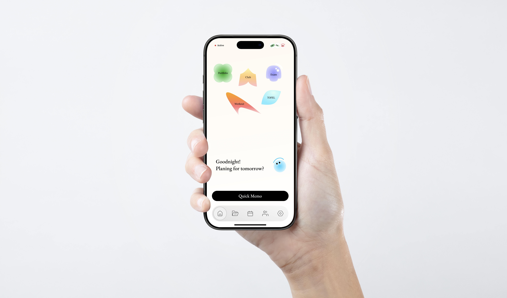
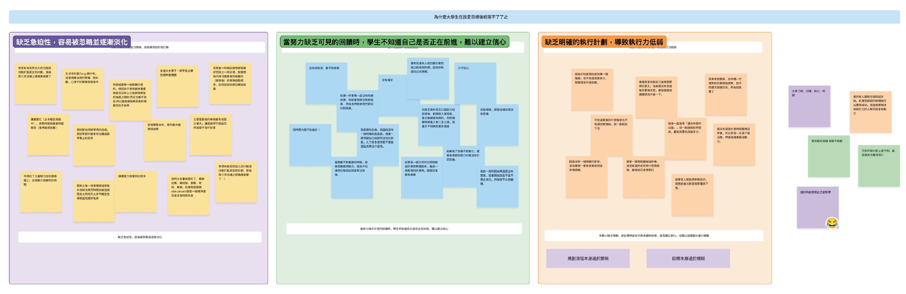
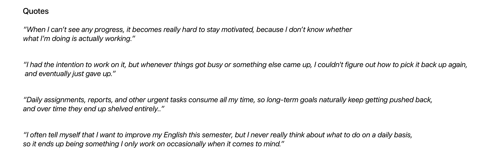
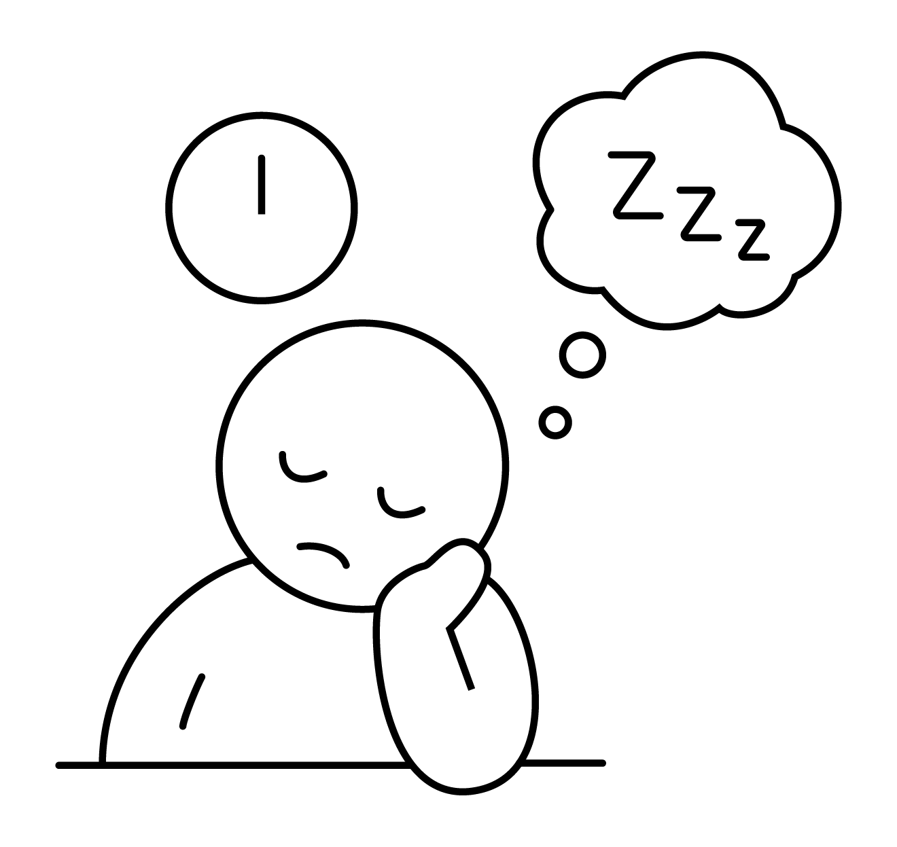
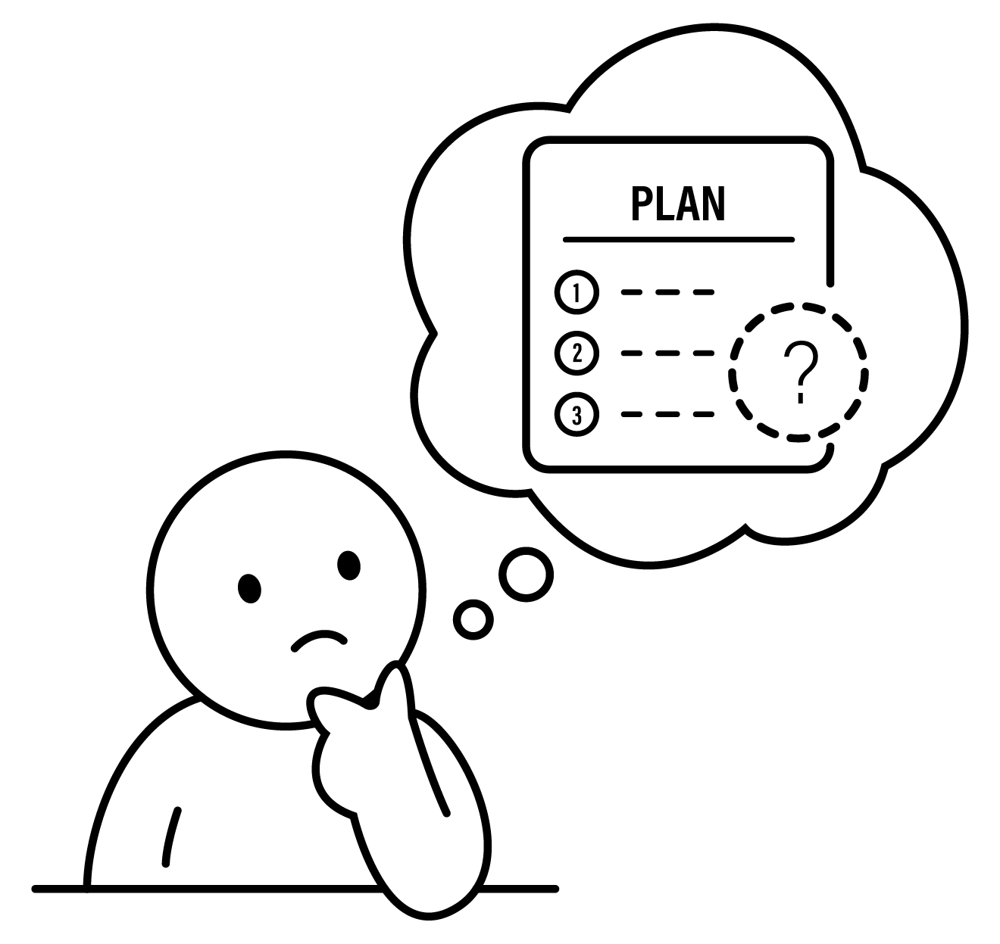
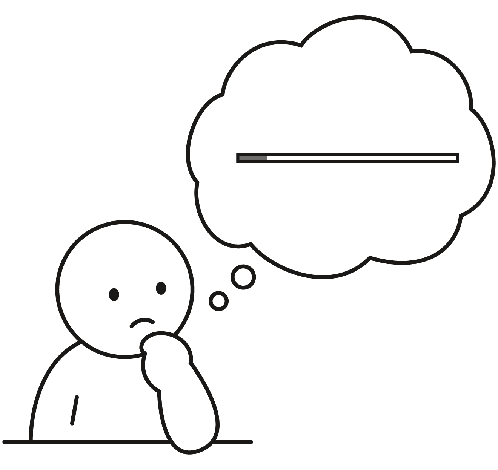

Colendar
Add your subtitle or context line here.
SUMMARY
Colendar is a task-planning tool designed for college students, aimed at increasing their chances of achieving academic goals. Through an engaging, low-friction planning experience and peer accountability features, it helps users stay on track with the goals they set at the beginning of the semester while gradually building stronger time management habits
KEY ACHIEVEMENTS
- 2026 Young Pin Sponsor Award — Finalist
- 2026 NCKU Innovation Dream Project — Finalist
context
Goals are set at the start of the semester, but often fade away by the end.
At the start of the semester, we set various learning and growth goals. But as coursework, activities, and social commitments fill our days, long-term goals are gradually replaced by short-term demands—eventually forgotten or abandoned.
User research
Discover Patterns : Compiling insights from interviews, surveys, and secondary research
We conducted in-depth background research, collecting 52 survey responses and interviewing 10 students from diverse academic backgrounds to explore why students struggle to sustain goal execution, as well as the underlying behavioral patterns and key barriers.


Key insight
Add a headline that states the main insight you want readers to take away.

Key Insight #1
Low urgency makes goals easy to overlook and likely to fade over time.

Key Insight #2
The lack of a clear execution plan leads to low execution ability.

Key Insight #3
Students often start doubting themselves when they can’t see any progress.
Design goals
Pain points
Pain Point #1
Low urgency makes goals easy to overlook and likely to fade over time.
As exams and activities increase, long-term tasks tend to be overlooked.
Design opportunities
Feature #1
How might we keep goals emotionally present in everyday life?
Maintain continuous attention to goals through peer interaction.
Pain Point #2
The lack of a clear execution plan leads to low execution ability.
A lack of planning leaves goals poorly defined, making them difficult to execute and adapt over time.
The tedious planning process reduces students’ willingness to create execution plans.
Feature #2
How might we make planning more enjoyable and accessible?
Pain Point #3
Students often start doubting themselves when they can’t see any progress.
A lack of feedback makes it difficult for students to assess their progress, leading to a gradual loss of confidence to continue.
Feature #3
How might we encourage students to keep going despite hesitation?
Encourage students to keep going by visualizing the accumulation of effort over time.
solution
Introducing Colendar
Colendar integrates conversational planning, social support, and process visualization to maintain goal awareness and sustain progress.
Peer sharing
Use peer sharing to keep goals consistently visible and top of mind!
Add the content for this block here.
Additional view
Add a headline for this block.
Add supporting copy here. Replace the gray area with a mockup image when ready.
Community
Let users reference how other students plan, lowering the barrier to starting from scratch.
Add the content for this block here.
Conversational planning
Transform the traditionally tedious planning process into an engaging and low-barrier experience through conversational input.
Add the content for this block here.
Wireframe
Visual System